Un fond par ordre de mission, dessiné en code comme ceux du monde 1 (version détaillée : grues, panneaux, décharge sur Mars, galets et scanners sur rail, presses à tableau de bord, poutres, chaînes, scies, vapeur). Tous les voyants ont maintenant un support.. Chaque carte montre le décor seul puis la vue en jeu (avec l'interface et la camionnette). Pour les voir bouger : le jeu en direct (?dev), ordres 1 à 5 du secteur 2.
Un portique à voyants ambre et rouges défile à gauche. Des bennes AGP et de la ferraille dérivent à trois profondeurs. Mars occupe le bas (elle apparaît après le décollage) : sol rouge, failles, cratères, avec la décharge posée dessus et un liseré d'atmosphère. La Terre est minuscule au loin.
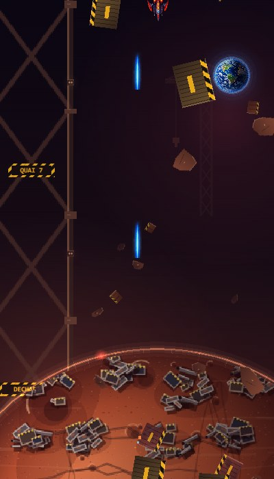
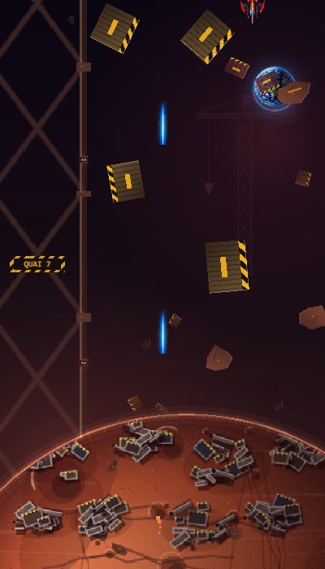
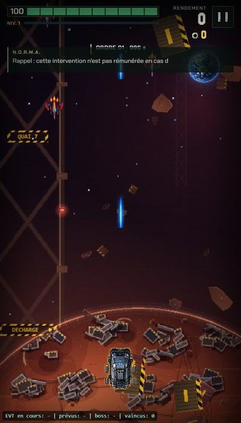
Six tapis roulants en mouvement, avec des caisses qui voyagent et des voyants vert/rouge. Deux bras articulés de tri balaient depuis les bords, et des piliers d'usine défilent derrière.
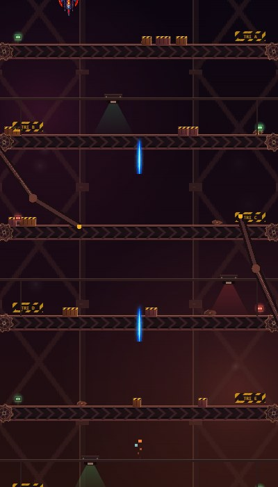
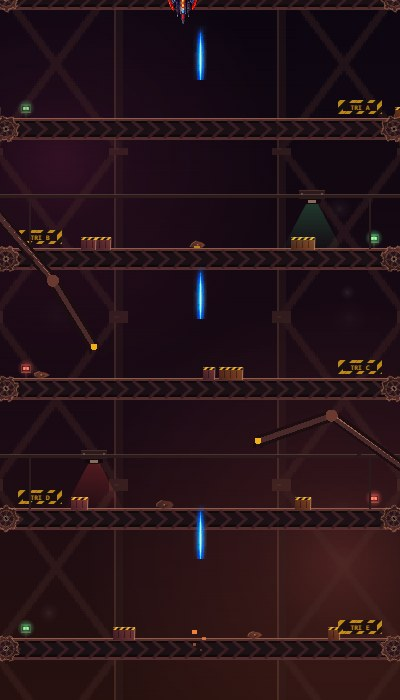
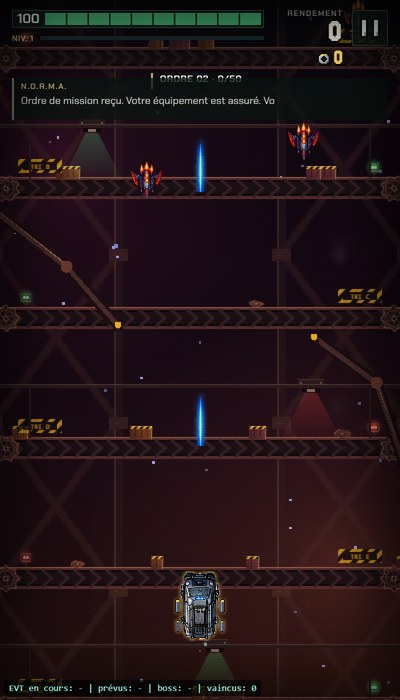
Deux presses à bandes de chantier se referment sur les côtés, avec des étincelles au contact. Des cubes de ferraille écrasée tombent et des voyants rouges clignotent en haut.
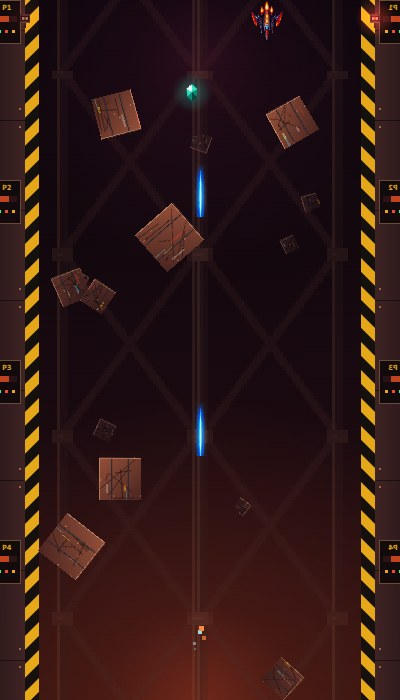
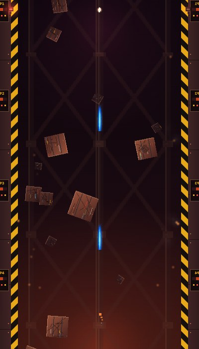
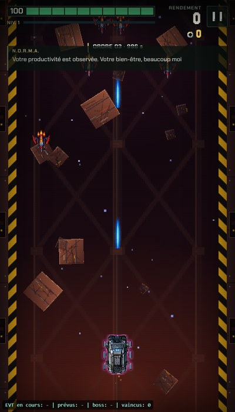
Une mine à ciel ouvert : parois en strates avec lampes de chantier, lueur de forge en bas, et des cristaux orange et rouges qui scintillent en tombant.
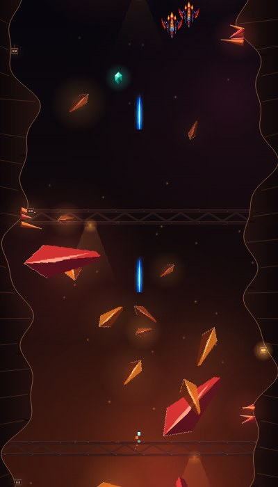
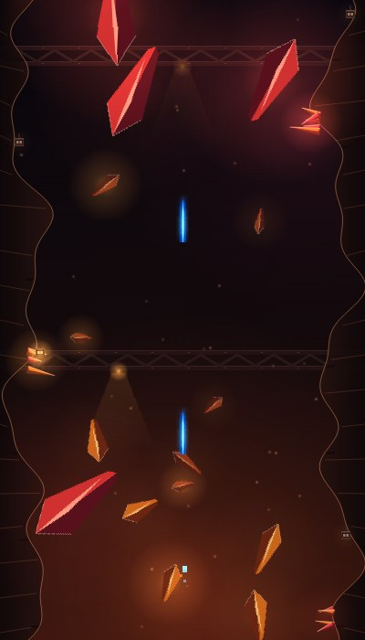
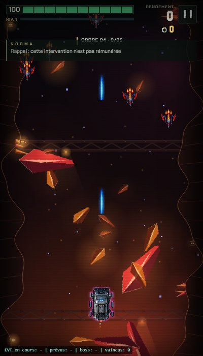
Des engrenages géants qui tournent en sens inverse, des mâchoires à dents en haut et en bas qui s'ouvrent et se ferment, une forge rouge qui pulse et des étincelles qui montent.
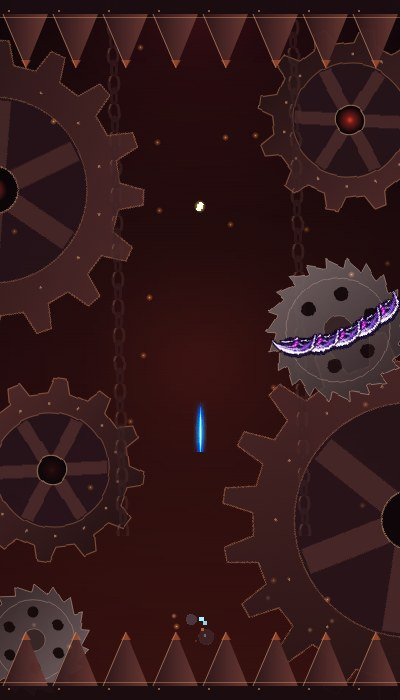
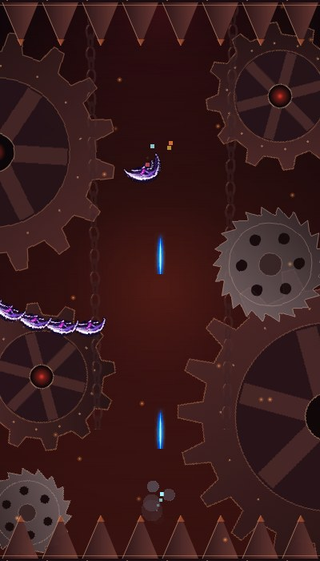
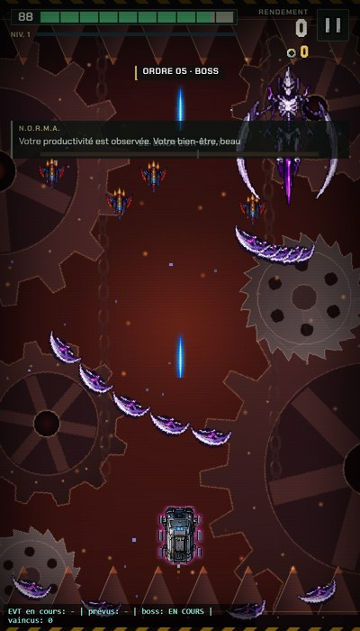